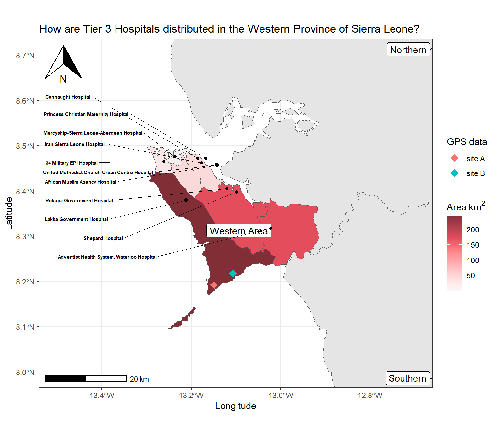

Until now, we have learnt general concepts about geospatial visualization in independent lessons. The modular approach of {ggplot2} allows to successively add all of them in different layers.
However, these enriched thematic maps also require to contain text and labels referring to specific places or regions, and important map elements like scale bars and a north arrow, as will be illustrated in this part.
Figure 1. Ggplot map with multiple layers.
In this lesson, we will learn to use functions from the {ggspatial} and {ggsflabel} packages to add all of these additional elements to our maps!
2 Learning objectives
Access hospital data coordinates using the {afrihealthsites} package.
Add text and labels to ggplot maps using the {ggsflabel} package.
Add arrow and scale annotations in ggplot maps using the {ggspatial} package.
Simple feature collection with 1120 features and 10 fields
Geometry type: POINT
Dimension: XY
Bounding box: xmin: -13.271 ymin: 6.9679 xmax: -10.3065 ymax: 9.9745
Geodetic CRS: WGS 84
# A tibble: 1,120 × 11
country admin1 facility_name facility_type ownership ll_source iso3c
* <chr> <chr> <chr> <chr> <chr> <chr> <chr>
1 Sierra Leone Eastern Ahmadiyya Missi… Mission Hosp… FBO GPS SLE
2 Sierra Leone Eastern Baama Community… Community He… MoH GPS SLE
3 Sierra Leone Eastern Baiama Communit… Community He… MoH GPS SLE
4 Sierra Leone Eastern Baiima Communit… Community He… MoH GPS SLE
5 Sierra Leone Eastern Baiwala Communi… Community He… MoH GPS SLE
6 Sierra Leone Eastern Bambara Kaima C… Community He… MoH GPS SLE
7 Sierra Leone Eastern Bambara Materna… Maternal & C… MoH GPS SLE
8 Sierra Leone Eastern Bambawulo Commu… Community He… MoH GPS SLE
9 Sierra Leone Eastern Bandajuma Commu… Community He… MoH GPS SLE
10 Sierra Leone Eastern Bandajuma Kpoli… Community He… MoH GPS SLE
# ℹ 1,110 more rows
# ℹ 4 more variables: facility_type_9 <chr>, tier <dbl>, tier_name <chr>,
# geometry <POINT [°]>
Access to all the health facilities of Zimbabwe from the healthsites data source using the afrihealthsites() function.
• According to the three-tier health delivery classification, the highest tier (Tier 3) are responsible for most inpatient services as well as teaching and research missions (Wang, 2021).}
• Let’s keep Tier 3 health facilities inside the Western province:
sf objects can handle on the fly the coordinate system (both projection and extent), which can be very useful if more than one spatial objects are not in the same projection.
4.2 Add a Scale bar and North arrow with {ggspatial}
• Let’s use {ggspatial} with a {ggplot} map:
• annotation_north_arrow() adds a north symbol, and
• This is not really satisfactory, as the names overlap on the points, and it’s not easy to read on the background.
• {ggsflabel} inspired in {ggrepel}deal with label placement in ggplot maps with sf objects, including automated movement of labels in case of overlap.
• geom_sf_text_repel and geom_sf_label_repel
• We “nudge” facility_name away, and connect them to the city locations:
• Adding district boundaries filled by area, and field sited recorded by a GPS device:
Code
# districtssierra_leone_shp <- sf::read_sf(here("data/boundaries/sle_adm3.shp")) %>%filter(admin1Name=="Western")# field site pointssites_sf <- readr::read_csv(here("data/gps_healthsites.csv")) %>%st_as_sf(coords =c("gps_longitude","gps_latitude"), crs =4326)
Code
ggplot() +# country mapgeom_sf(data = sierra_leone) +# districts filled by areageom_sf(data = sierra_leone_shp, # 👈👈👈👈👈👈👈👈👈👈👈👈👈👈👈mapping =aes(fill = area_km2)) +# color scale for fillscale_fill_continuous_sequential(palette="Reds 3", alpha =0.8) +# field site pointsgeom_sf(data = sites_sf, # 👈👈👈👈👈👈👈👈👈👈👈👈👈mapping =aes(color = gps_name),shape =18, size =4) +# province names with repelled labelsgeom_sf_label_repel(data = sierra_leone %>%filter(shapeName!="Eastern"),mapping =aes(label=shapeName)) +# hospital points geom_sf(data = sle_healthsites_set) +# hospital names with repelled text geom_sf_text_repel(data = sle_healthsites_set,mapping =aes(label = facility_name),size =2,fontface ="bold",force =0.5,box.padding =0.6,nudge_x =-0.25,direction ="y",hjust =1,segment.size =0.2) +# map annotationannotation_north_arrow(location="tl") +annotation_scale(location="bl") +# map extentcoord_sf(xlim =c(-13.5,-12.7), ylim =c(8.0,8.7)) +# ggplot labelslabs(x ="Longitude",y ="Latitude",fill =expression(Area~km^2),color ="GPS data",title ="How are Tier 3 Hospitals distributed in the Western Province of Sierra Leone?")

6 Wrap up
• Adding layers on ggplot2 is relatively straightforward, as long as the data is properly stored in an sf object.
• Adding additional layers like point or polygon labels and map annotations would simply follow the same logic, with additional calls aftergeom_sf() and at the right place in the ggplot2 sequence.
Contributors
The following team members contributed to this lesson:
---title: 'Layers'author: - name: "Andree Valle Campos" - name: "Laure Vancauwenberghe"date: "2024-12-22"format: html: code-fold: true code-tools: true number-sections: true toc: true css: global/style/style.csseditor: visual---```{r, include = FALSE, warning = FALSE, message = FALSE}# Load packages if(!require(pacman)) install.packages("pacman")pacman::p_load(tidyverse, knitr, here)# Source functions source(here("global/functions/misc_functions.R"))# knitr settingsknitr::opts_chunk$set(warning = F, message = F, class.source = "tgc-code-block", error = T)``````{r,echo=FALSE}ggplot2::theme_set(new = theme_bw())```------------------------------------------------------------------------# IntroductionUntil now, we have learnt general concepts about geospatial visualization in independent lessons. The **modular** approach of `{ggplot2}` allows to successively add all of them in different **layers**.However, these enriched thematic maps also require to contain **text** and **labels** referring to specific places or regions, and important map elements like **scale bars** and a **north arrow**, as will be illustrated in this part.{width="408"}In this lesson, we will learn to use functions from the `{ggspatial}` and `{ggsflabel}` packages to add all of these additional elements to our maps!------------------------------------------------------------------------# Learning objectives1. Access **hospital** data coordinates using the `{afrihealthsites}` package.2. Add text and **labels** to ggplot maps using the `{ggsflabel}` package.3. Add arrow and scale **annotations** in ggplot maps using the `{ggspatial}` package.------------------------------------------------------------------------# PrerequisitesThis lesson requires the following packages:```{r,eval=TRUE,echo=TRUE,message=FALSE}if(!require('pacman')) install.packages('pacman')pacman::p_load(tidyverse, colorspace, ggspatial, janitor, ggplot2, readxl, spData, units, here, sf, rgeoboundaries)pacman::p_load_gh("yutannihilation/ggsflabel", "afrimapr/afrihealthsites", "afrimapr/afrilearndata")```------------------------------------------------------------------------# Build an informative map• How are Tier 3 Hospitals distributed in the Western Province of Sierra Leone?• Retrieve real Hospital information from a public repository.## Access hospital sites with `{afrihealthsites}`• `afrihealthsites()` from [`{afrihealthsites}`](https://github.com/afrimapr/afrihealthsites)• Coordinates of African health facilities from different sources.• Health facilities in `Sierra Leone` available in the `who` database:```{r cities-fl}sle_healthsites_all <- afrihealthsites(country = "Sierra Leone", datasource = 'who', plot = FALSE) %>% janitor::clean_names()sle_healthsites_all```::: r-practiceAccess to all the health facilities of `Zimbabwe` from the `healthsites` data source using the `afrihealthsites()` function.```{r,eval=FALSE,echo=FALSE}afrihealthsites(country = "Zimbabwe", datasource = "healthsites", plot = FALSE) %>% print()```:::::: side-note• According to the *three-tier* health delivery classification, the highest tier (Tier 3) are responsible for most inpatient services as well as teaching and research missions ([Wang, 2021](https://equityhealthj.biomedcentral.com/articles/10.1186/s12939-021-01401-w)).}:::• Let's keep Tier 3 health facilities inside the Western province:```{r}sle_healthsites_set <- sle_healthsites_all %>%filter(admin1 =="Western Area") %>%# 👈👈👈👈👈👈👈👈👈👈👈👈👈👈👈filter(tier ==3)sle_healthsites_set```• These sites belong to `Sierra Leone`,• Let's get their province boundaries with `{rgeoboundaries}`:```{r}sierra_leone <-geoboundaries(country ="Sierra Leone", adm_lvl =1)```• Let's map `sierra_leone` and `sle_healthsites_set`:```{r}ggplot() +# country mapgeom_sf(data = sierra_leone) +# hospital pointsgeom_sf(data = sle_healthsites_set)```• Let's use `coord_sf()` to **zoom in** in area of interest:```{r}ggplot() +# country mapgeom_sf(data = sierra_leone) +# hospital pointsgeom_sf(data = sle_healthsites_set) +# map extentcoord_sf(xlim =c(-13.5,-12.7), ylim =c(8.0,8.7)) # 👈👈👈👈👈👈👈```::: recap`sf` objects can handle on the fly the **coordinate system** (both *projection* and *extent*), which can be very useful if more than one spatial objects are not in the same projection.:::## Add a Scale bar and North arrow with `{ggspatial}`• Let's use `{ggspatial}` with a `{ggplot}` map:• `annotation_north_arrow()` adds a north symbol, and• `annotation_scale()` a scale bar.```{r world-scale-north, message = TRUE}ggplot() + # country map geom_sf(data = sierra_leone) + # hospital points geom_sf(data = sle_healthsites_set) + # map annotations annotation_north_arrow(location = "tl") + # 👈👈👈👈👈👈👈👈👈👈👈👈 annotation_scale(location = "bl") + # map extent coord_sf(xlim = c(-13.5,-12.7), ylim = c(8.0,8.7))```• **location** are by default in the bottom left (`"bl"`)• `location` uses `"tr"` for top right, `"bl"` for bottom left, etc.::: practiceThe `zimbabwe_adm1` object contains the boundaries of all the provinces in Zimbabwe.```{r, eval = TRUE, echo = TRUE}zimbabwe_adm1 <- geoboundaries(country = "Zimbabwe", adm_lvl = 1) ```To this `ggplot` map with the `zimbabwe_adm1` object:Add a Scale bar located in the `bottom right` of the map, and a North arrow in the `top left`.```{r,eval = FALSE}q4 <- zimbabwe_adm1 %>% ggplot() + geom_sf() + annotation_north_arrow(location = "tl") + annotation_scale(location = "br")q4```:::::: side-note• The [North arrow style](https://paleolimbot.github.io/ggspatial/reference/north_arrow_orienteering.html) can be adjusted with `style`.• [scale distance](https://paleolimbot.github.io/ggspatial/reference/annotation_scale.html) is set to `"km"` by default, you can also set it in "m", "cm", "mi", "ft", or "in".:::## Add hospital names with `geom_sf_text_repel()`• Use `geom_sf_text()` to add hospital locations and names as text:```{r cities-plot}sle_healthsites_set %>% ggplot() + # geometry geom_sf() + # label geom_sf_text(mapping = aes(label= facility_name)) # 👈👈👈👈👈👈👈```• This is not really satisfactory, as the names overlap on the points, and it's not easy to read on the background.• [`{ggsflabel}`](https://yutannihilation.github.io/ggsflabel/index.html) inspired in `{ggrepel}`deal with label placement in `ggplot` maps with `sf` objects, including automated movement of labels in case of overlap.• `geom_sf_text_repel` and `geom_sf_label_repel`• We "nudge" `facility_name` away, and connect them to the city locations:```{r cities-plot-nudge}sle_healthsites_set %>% ggplot() + # geometry geom_sf() + # label geom_sf_text_repel(aes(label = facility_name)) # 👈👈👈👈```::: practice`zimbabwe_hospitals` contains all the `hospital` facilities of `Zimbabwe`:```{r,eval=FALSE}zimbabwe_hospitals <- afrihealthsites(country = 'Zimbabwe', datasource='healthsites', plot = FALSE) %>% filter(amenity == 'hospital')zimbabwe_hospitals```Add the name of these facilities as text without overlaps using the `geom_sf_text_repel()` function.```{r,eval = FALSE}q5 <- zimbabwe_hospitals %>% ggplot() + geom_sf() + geom_sf_text_repel(aes(label = name))q5```:::• We can use [`{ggrepel}` arguments](https://ggrepel.slowkow.com/articles/examples.html) to improve its output:• The size (argument `size`);• The type of font (`fontface`);• The force of repulsion between overlapping text labels (`force`);• The additional padding around the each text label (`box.padding`).```{r}sle_healthsites_set %>%ggplot() +# geometrygeom_sf() +# labelgeom_sf_text_repel(mapping =aes(label= facility_name),size =2, # 👈👈👈👈👈👈👈👈👈👈👈👈👈👈fontface ="bold",force =40, box.padding =0.6)```• Adding this layer to the current map, we obtain:```{r}ggplot() +# country mapgeom_sf(data = sierra_leone) +# hospital points geom_sf(data = sle_healthsites_set) +# hospital names with repelled text geom_sf_text_repel(data = sle_healthsites_set, # 👈👈👈👈👈mapping =aes(label = facility_name),size =2,fontface ="bold",force =0.5,box.padding =0.6,nudge_x =-0.25,direction ="y",hjust =1,segment.size =0.2) +# map annotationannotation_north_arrow(location="tr") +annotation_scale(location="bl") +# map extentcoord_sf(xlim =c(-13.5,-12.7), ylim =c(8.0,8.7))```## Add province labels with `geom_sf_label_repel()`• Let's add names of administrative borders, available in `shapeName`:```{r states}sierra_leone %>% ggplot() + # country map geom_sf() + # province labels geom_sf_label_repel(aes(label = shapeName)) # 👈👈👈👈👈👈👈👈👈👈👈```::: practiceThe `zimbabwe_adm1` object contains the boundaries of all the provinces in Zimbabwe.```{r,eval=TRUE,echo=TRUE}zimbabwe_adm1 <- geoboundaries(country = "Zimbabwe", adm_lvl = 1)```Create a `ggplot` map of Zimbabwe with labels for the name of each of its provinces.```{r,eval = FALSE}q6 <- zimbabwe_adm1 %>% ggplot() + # country map geom_sf() + # province labels geom_sf_label_repel(aes(label = shapeName))q6```:::• Let's drop Eastern label using `filter()` from `{dplyr}`:```{r states-nudge}ggplot() + # country map geom_sf(data = sierra_leone) + # province labels geom_sf_label_repel( data = sierra_leone %>% filter(shapeName != "Eastern"), mapping = aes(label = shapeName)) + # 👈👈👈👈👈👈 # hospital points geom_sf(data = sle_healthsites_set) + # hospital names with repelled text geom_sf_text_repel(data = sle_healthsites_set, mapping = aes(label = facility_name), size = 2, fontface = "bold", force = 0.5, box.padding = 0.6, nudge_x = -0.25, direction = "y", hjust = 1, segment.size = 0.2) + # map annotation annotation_north_arrow(location="tl") + annotation_scale(location="bl") + # map extent coord_sf(xlim = c(-13.5,-12.7), ylim = c(8.0,8.7))```------------------------------------------------------------------------# Final map• Let's put everything together:• Adding district boundaries filled by area, and field sited recorded by a GPS device:```{r, message=FALSE,warning=FALSE}# districtssierra_leone_shp <- sf::read_sf(here("data/boundaries/sle_adm3.shp")) %>% filter(admin1Name=="Western")# field site pointssites_sf <- readr::read_csv( here("data/gps_healthsites.csv")) %>% st_as_sf(coords = c("gps_longitude","gps_latitude"), crs = 4326)``````{r,fig.width=8,fig.height=7}ggplot() + # country map geom_sf(data = sierra_leone) + # districts filled by area geom_sf(data = sierra_leone_shp, # 👈👈👈👈👈👈👈👈👈👈👈👈👈👈👈 mapping = aes(fill = area_km2)) + # color scale for fill scale_fill_continuous_sequential(palette="Reds 3", alpha = 0.8) + # field site points geom_sf(data = sites_sf, # 👈👈👈👈👈👈👈👈👈👈👈👈👈 mapping = aes(color = gps_name), shape = 18, size = 4) + # province names with repelled labels geom_sf_label_repel(data = sierra_leone %>% filter(shapeName!="Eastern"), mapping = aes(label=shapeName)) + # hospital points geom_sf(data = sle_healthsites_set) + # hospital names with repelled text geom_sf_text_repel(data = sle_healthsites_set, mapping = aes(label = facility_name), size = 2, fontface = "bold", force = 0.5, box.padding = 0.6, nudge_x = -0.25, direction = "y", hjust = 1, segment.size = 0.2) + # map annotation annotation_north_arrow(location="tl") + annotation_scale(location="bl") + # map extent coord_sf(xlim = c(-13.5,-12.7), ylim = c(8.0,8.7)) + # ggplot labels labs(x = "Longitude", y = "Latitude", fill = expression(Area~km^2), color = "GPS data", title = "How are Tier 3 Hospitals distributed in the Western Province of Sierra Leone?")```------------------------------------------------------------------------# Wrap up• Adding **layers** on `ggplot2` is relatively straightforward, as long as the data is properly stored in an `sf` object.• Adding additional layers like point or polygon **labels** and **map annotations** would simply follow the same logic, with additional calls *after* `geom_sf()` and at the *right place* in the `ggplot2` sequence.------------------------------------------------------------------------# Contributors {.unlisted .unnumbered}The following team members contributed to this lesson: `r tgc_contributors_list(ids = c("avallecam", "lolovanco"))`------------------------------------------------------------------------## References {.unlisted .unnumbered}Some material in this lesson was adapted from the following sources:- *Moreno, M., Basille, M. Drawing beautiful maps programmatically with R, sf and ggplot2 --- Part 1: Basics*. (2018). Retrieved 01 June 2022, from <https://r-spatial.org/r/2018/10/25/ggplot2-sf.html>- *Moreno, M., Basille, M. Drawing beautiful maps programmatically with R, sf and ggplot2 --- Part 2: Layers*. (2018). Retrieved 01 June 2022, from <https://r-spatial.org/r/2018/10/25/ggplot2-sf-2.html>- *Wilke, Claus O. Fundamentals of Data Visualization. Chapter 4: Color scales*. (2020). Retrieved 01 June 2022, from <https://clauswilke.com/dataviz/color-basics.html#color-to-represent-data-values>`r tgc_license()`